Function performs various omnibus differential item (DIF), bundle (DBF), and test (DTF)
functioning procedures on an object
estimated with multipleGroup(). The compensatory and non-compensatory statistics provided
are described in Chalmers (2018), which generally can be interpreted as IRT generalizations
of the SIBTEST and CSIBTEST statistics. These require the ACOV matrix to be computed in the
fitted multiple-group model (otherwise, sets of plausible draws from the posterior are explicitly
required).
DRF( mod, draws = NULL, focal_items = 1L:extract.mirt(mod, "nitems"), param_set = NULL, CI = 0.95, npts = 1000, quadpts = NULL, theta_lim = c(-6, 6), Theta_nodes = NULL, plot = FALSE, DIF = FALSE, p.adjust = "none", par.strip.text = list(cex = 0.7), par.settings = list(strip.background = list(col = "#9ECAE1"), strip.border = list(col = "black")), auto.key = list(space = "right", points = FALSE, lines = TRUE), ... )
Arguments
| mod | a multipleGroup object which estimated only 2 groups |
|---|---|
| draws | a number indicating how many draws to take to form a suitable multiple imputation
or bootstrap estimate of the expected test scores (100 or more). If |
| focal_items | a numeric vector indicating which items to include in the DRF tests. The default uses all of the items (note that including anchors in the focal items has no effect because they are exactly equal across groups). Selecting fewer items will result in tests of 'differential bundle functioning' |
| param_set | an N x p matrix of parameter values drawn from the posterior (e.g., using the
parametric sampling approach, bootstrap, of MCMC). If supplied, then these will be used to compute
the DRF measures. Can be much more efficient to pre-compute these values if DIF, DBF, or DTF are
being evaluated within the same model (especially when using the bootstrap method).
See |
| CI | range of confidence interval when using draws input |
| npts | number of points to use for plotting. Default is 1000 |
| quadpts | number of quadrature nodes to use when constructing DRF statistics. Default is extracted from the input model object |
| theta_lim | lower and upper limits of the latent trait (theta) to be evaluated, and is
used in conjunction with |
| Theta_nodes | an optional matrix of Theta values to be evaluated in the draws for the sDRF statistics. However, these values are not averaged across, and instead give the bootstrap confidence intervals at the respective Theta nodes. Useful when following up a large sDRF or uDRF statistic, for example, to determine where the difference between the test curves are large (while still accounting for sampling variability). Returns a matrix with observed variability |
| plot | logical; plot the 'sDRF' functions for the evaluated sDBF or sDTF values across the
integration grid or, if |
| DIF | logical; return a list of item-level imputation properties using the DRF statistics? These can generally be used as a DIF detection method and as a graphical display for understanding DIF within each item |
| p.adjust | string to be passed to the |
| par.strip.text | plotting argument passed to |
| par.settings | plotting argument passed to |
| auto.key | plotting argument passed to |
| ... | additional arguments to be passed to |
References
Chalmers, R. P. (2018). Model-Based Measures for Detecting and Quantifying Response Bias. Psychometrika, 83(3), 696-732. doi: 10.1007/s11336-018-9626-9
See also
Author
Phil Chalmers rphilip.chalmers@gmail.com
Examples
# \donttest{ set.seed(1234) n <- 30 N <- 500 # only first 5 items as anchors model <- 'F = 1-30 CONSTRAINB = (1-5, a1), (1-5, d)' a <- matrix(1, n) d <- matrix(rnorm(n), n) group <- c(rep('Group_1', N), rep('Group_2', N)) ## ------------- # groups completely equal dat1 <- simdata(a, d, N, itemtype = 'dich') dat2 <- simdata(a, d, N, itemtype = 'dich') dat <- rbind(dat1, dat2) mod <- multipleGroup(dat, model, group=group, SE=TRUE, invariance=c('free_means', 'free_var')) plot(mod)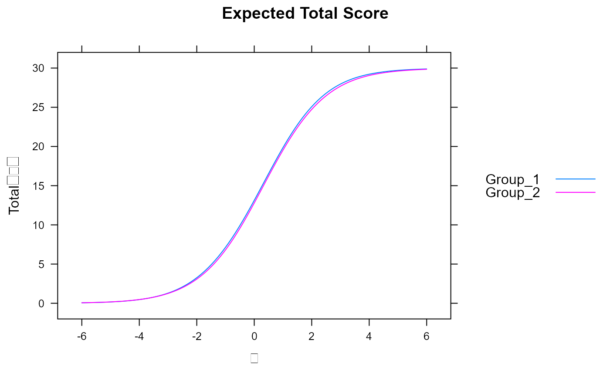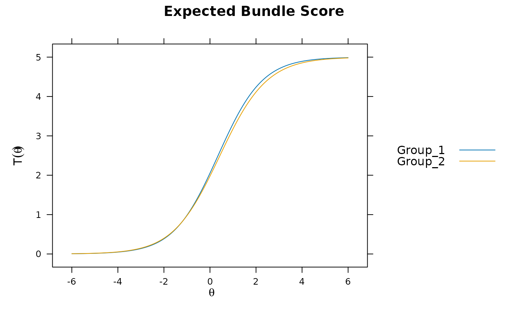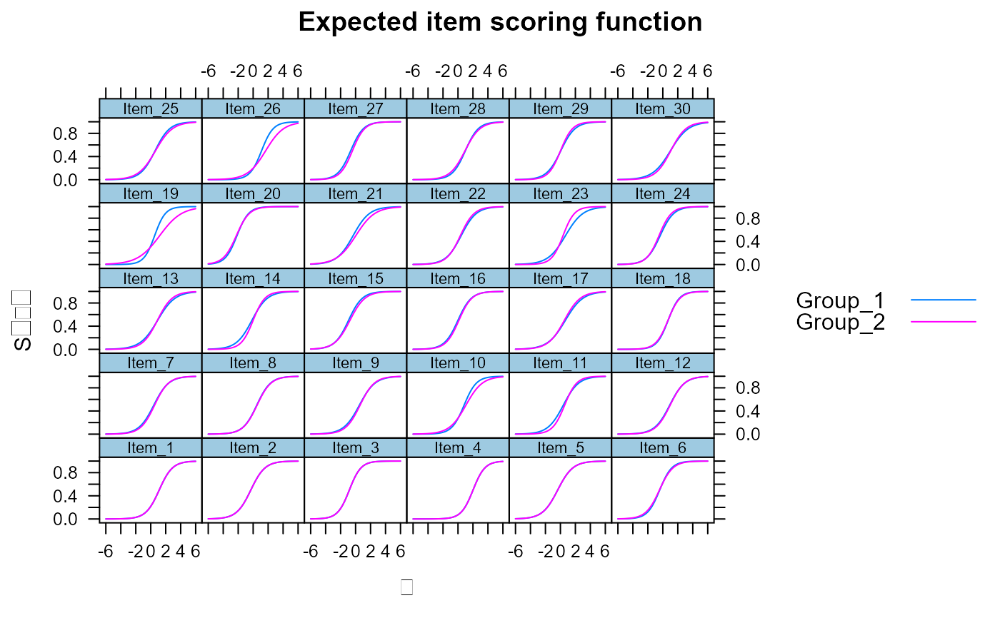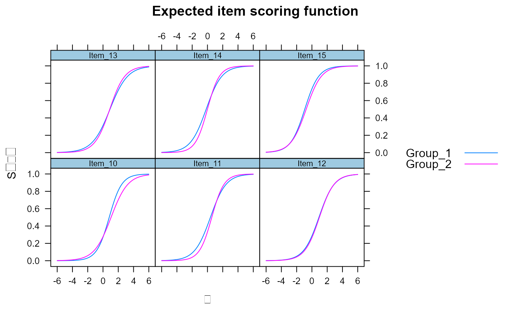DRF(mod)#> n_focal_items sDRF uDRF #> 1 30 0.3259428 0.3259431DRF(mod, focal_items = 6:10) #DBF#> n_focal_items sDRF uDRF #> 1 5 0.06949846 0.07137772DRF(mod, DIF=TRUE)#> sDIF uDIF #> 1 0.000000e+00 0.000000000 #> 2 0.000000e+00 0.000000000 #> 3 0.000000e+00 0.000000000 #> 4 0.000000e+00 0.000000000 #> 5 0.000000e+00 0.000000000 #> 6 6.516844e-05 0.015752828 #> 7 2.610811e-02 0.026161268 #> 8 7.680169e-03 0.007680170 #> 9 2.583983e-02 0.026276119 #> 10 9.805183e-03 0.035756505 #> 11 5.558645e-02 0.058811733 #> 12 1.599577e-02 0.016007379 #> 13 1.485875e-02 0.022426151 #> 14 3.337662e-02 0.046158499 #> 15 4.546204e-02 0.045463652 #> 16 3.046520e-02 0.030465208 #> 17 -1.767540e-02 0.019053124 #> 18 -1.086644e-02 0.012956473 #> 19 4.512319e-02 0.093764868 #> 20 7.801600e-03 0.009532481 #> 21 6.958687e-02 0.069602240 #> 22 -1.737925e-02 0.019754273 #> 23 -3.605848e-02 0.063770870 #> 24 -4.004188e-02 0.040081256 #> 25 -2.105065e-03 0.018486808 #> 26 1.872758e-02 0.047070361 #> 27 4.883445e-02 0.048834450 #> 28 -2.656203e-02 0.028764229 #> 29 -7.356801e-03 0.025324258 #> 30 2.867113e-02 0.030823663DRF(mod, DIF=TRUE, focal_items = 10:15)#> sDIF uDIF #> 10 0.009805183 0.03575651 #> 11 0.055586448 0.05881173 #> 12 0.015995774 0.01600738 #> 13 0.014858750 0.02242615 #> 14 0.033376618 0.04615850 #> 15 0.045462035 0.04546365DRF(mod, plot = TRUE)DRF(mod, focal_items = 6:10, plot = TRUE) #DBF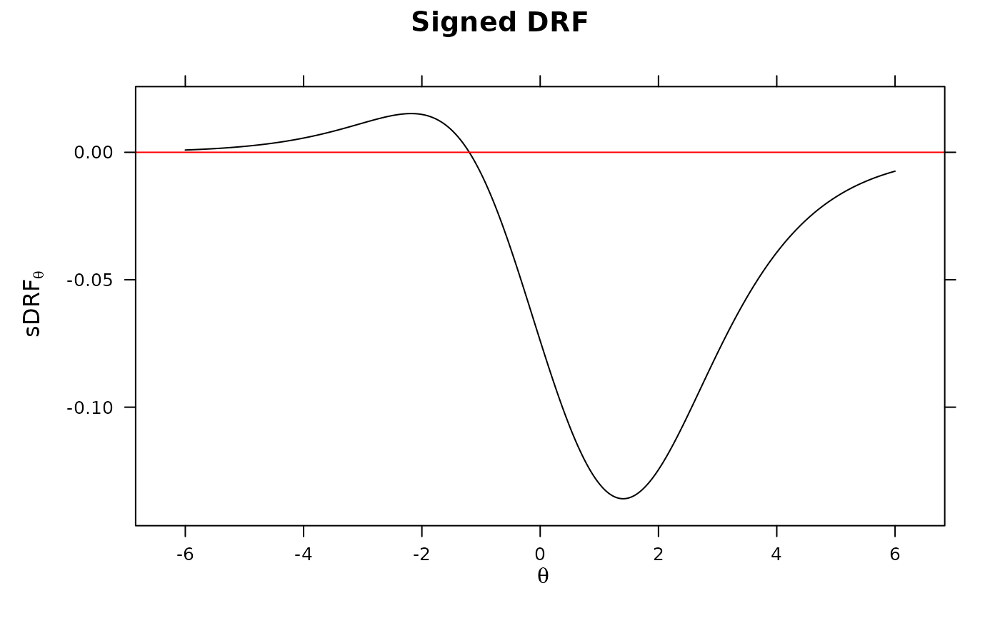DRF(mod, DIF=TRUE, plot = TRUE)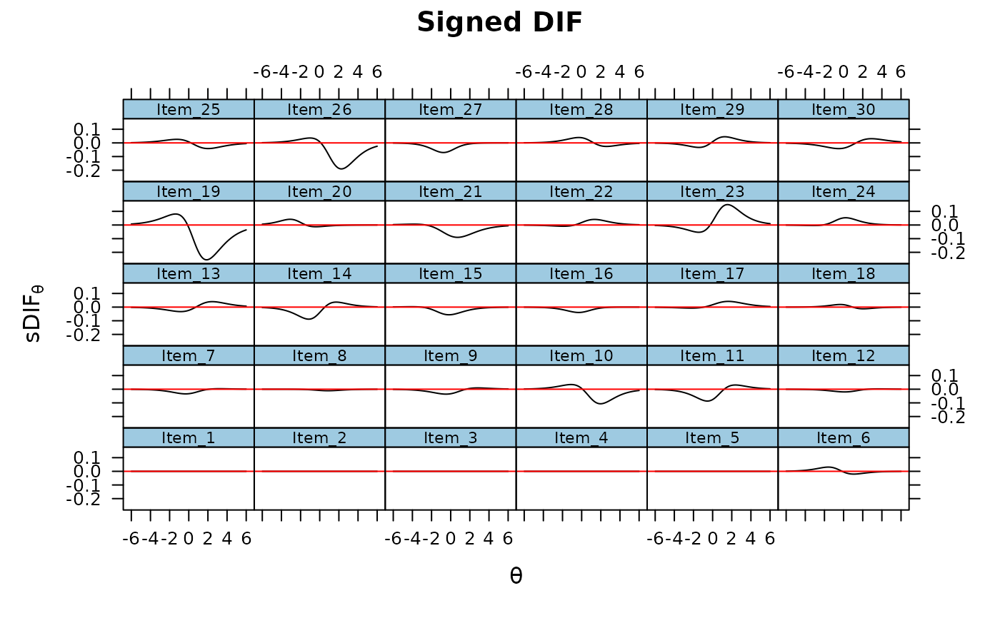DRF(mod, DIF=TRUE, focal_items = 10:15, plot = TRUE)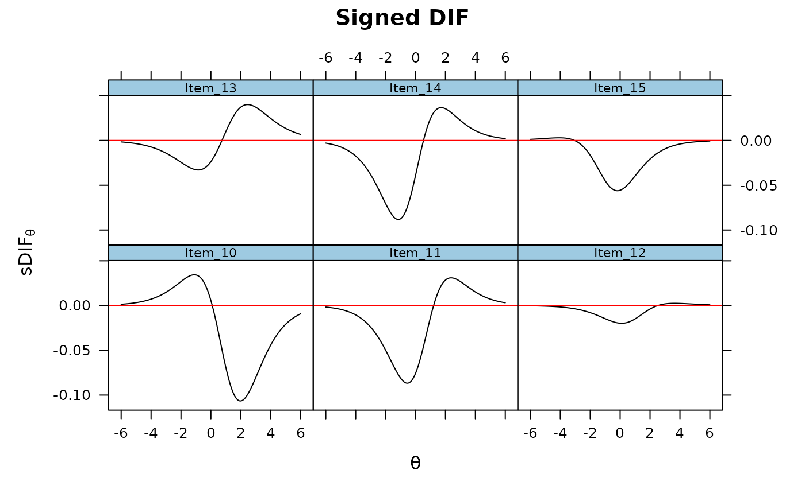#>DRF(mod, draws = 500)#> n_focal_items stat CI_2.5 CI_97.5 X2 df p #> sDRF 30 0.3259428 -0.34805034 1.008269 0.9147496 1 0.3388573 #> uDRF 30 0.3259431 0.09609852 1.008770 0.9148069 2 0.6329249DRF(mod, draws = 500, plot=TRUE)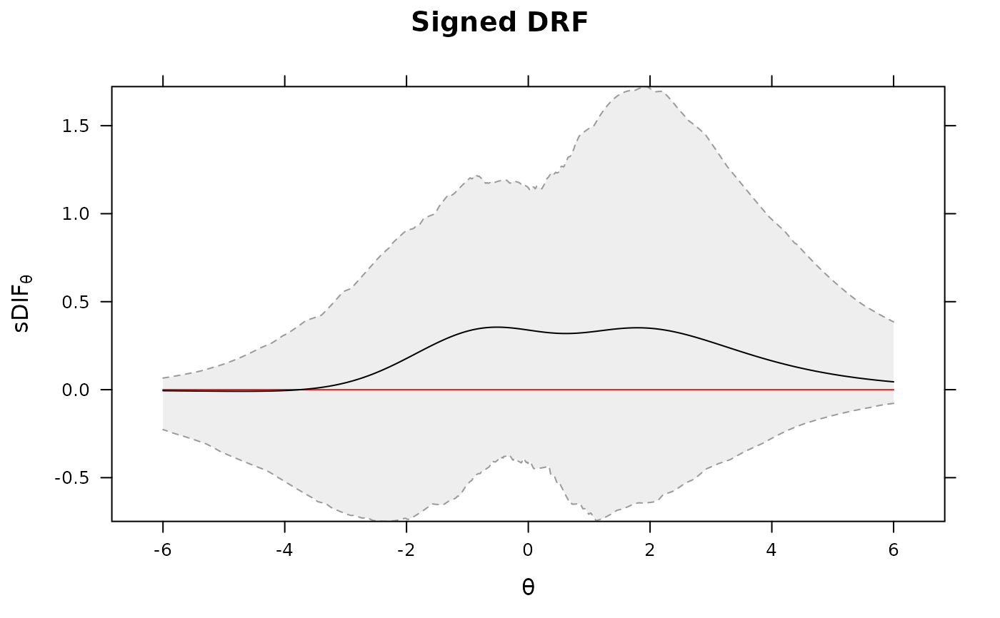# pre-draw parameter set to save computations param_set <- draw_parameters(mod, draws = 500) DRF(mod, focal_items = 6, param_set=param_set) #DIF#> n_focal_items stat CI_2.5 CI_97.5 X2 df #> sDRF 1 6.516844e-05 -0.066526017 0.05881497 4.143309e-06 1 #> uDRF 1 1.575283e-02 0.006443179 0.07961061 2.839950e-01 2 #> p #> sDRF 0.9983759 #> uDRF 0.8676234DRF(mod, DIF=TRUE, param_set=param_set) #DIF#> $sDIF #> sDIF CI_2.5 CI_97.5 X2 df p #> 1 0.000000e+00 0.000000000 0.00000000 NA NA NA #> 2 0.000000e+00 0.000000000 0.00000000 NA NA NA #> 3 0.000000e+00 0.000000000 0.00000000 NA NA NA #> 4 0.000000e+00 0.000000000 0.00000000 NA NA NA #> 5 0.000000e+00 0.000000000 0.00000000 NA NA NA #> 6 6.516844e-05 -0.066526017 0.05881497 4.143309e-06 1 0.99837590 #> 7 2.610811e-02 -0.040903267 0.08467953 7.430021e-01 1 0.38870090 #> 8 7.680169e-03 -0.055911702 0.06043355 6.595365e-02 1 0.79732203 #> 9 2.583983e-02 -0.040475500 0.08888255 7.236064e-01 1 0.39496349 #> 10 9.805183e-03 -0.054328738 0.06625445 1.051181e-01 1 0.74577205 #> 11 5.558645e-02 -0.004756617 0.11688809 2.967359e+00 1 0.08496047 #> 12 1.599577e-02 -0.035451169 0.07140027 3.289515e-01 1 0.56627715 #> 13 1.485875e-02 -0.042787010 0.06704555 2.830559e-01 1 0.59470521 #> 14 3.337662e-02 -0.028886127 0.09807542 1.071541e+00 1 0.30059771 #> 15 4.546204e-02 -0.024811750 0.09852804 2.324749e+00 1 0.12733078 #> 16 3.046520e-02 -0.031796608 0.08463850 1.030683e+00 1 0.30999822 #> 17 -1.767540e-02 -0.078237743 0.03788278 3.669166e-01 1 0.54468982 #> 18 -1.086644e-02 -0.073666156 0.04913118 1.229107e-01 1 0.72589884 #> 19 4.512319e-02 -0.015957348 0.10163146 2.288045e+00 1 0.13037405 #> 20 7.801600e-03 -0.038175382 0.04238504 1.429749e-01 1 0.70534127 #> 21 6.958687e-02 0.009275968 0.12431540 5.038773e+00 1 0.02478604 #> 22 -1.737925e-02 -0.084946501 0.04406918 3.129787e-01 1 0.57585805 #> 23 -3.605848e-02 -0.099256630 0.01708025 1.493266e+00 1 0.22171043 #> 24 -4.004188e-02 -0.106049065 0.01885383 1.561230e+00 1 0.21148518 #> 25 -2.105065e-03 -0.060941221 0.04777705 5.267571e-03 1 0.94214191 #> 26 1.872758e-02 -0.036031284 0.06877310 5.269862e-01 1 0.46787667 #> 27 4.883445e-02 -0.015911757 0.10933166 2.385107e+00 1 0.12249654 #> 28 -2.656203e-02 -0.091296893 0.03510847 8.121140e-01 1 0.36749598 #> 29 -7.356801e-03 -0.070727283 0.04985160 5.506267e-02 1 0.81447701 #> 30 2.867113e-02 -0.026494068 0.08706740 8.894970e-01 1 0.34561366 #> #> $uDIF #> uDIF CI_2.5 CI_97.5 X2 df p #> 1 0.000000000 0.000000000 0.00000000 NA NA NA #> 2 0.000000000 0.000000000 0.00000000 NA NA NA #> 3 0.000000000 0.000000000 0.00000000 NA NA NA #> 4 0.000000000 0.000000000 0.00000000 NA NA NA #> 5 0.000000000 0.000000000 0.00000000 NA NA NA #> 6 0.015752828 0.006443179 0.07961061 0.28399500 2 0.867623427 #> 7 0.026161268 0.006357086 0.08689480 0.76180195 2 0.683245544 #> 8 0.007680170 0.007022988 0.07579723 0.06595402 2 0.967560805 #> 9 0.026276119 0.006696075 0.09173717 0.81440750 2 0.665508578 #> 10 0.035756505 0.010609424 0.09256819 1.61925384 2 0.445024064 #> 11 0.058811733 0.020089587 0.12183155 3.65654294 2 0.160691087 #> 12 0.016007379 0.007243424 0.07344761 0.33244000 2 0.846859906 #> 13 0.022426151 0.007398369 0.07794165 0.73946634 2 0.690918662 #> 14 0.046158499 0.014308076 0.10748688 2.51236560 2 0.284738859 #> 15 0.045463652 0.012739224 0.09994936 2.32751132 2 0.312311042 #> 16 0.030465208 0.008259155 0.08750383 1.03070960 2 0.597288640 #> 17 0.019053124 0.007852521 0.08012132 0.48410465 2 0.785015100 #> 18 0.012956473 0.007010871 0.08053155 0.22471970 2 0.893722596 #> 19 0.093764868 0.044123868 0.15301629 10.86433483 2 0.004373606 #> 20 0.009532481 0.003896371 0.05393983 0.26546655 2 0.875698634 #> 21 0.069602240 0.016330032 0.12854014 5.05245715 2 0.079960016 #> 22 0.019754273 0.005721742 0.08959497 0.46346932 2 0.793156550 #> 23 0.063770870 0.019530772 0.11889585 5.20119562 2 0.074229190 #> 24 0.040081256 0.009256739 0.10592976 1.58683337 2 0.452296798 #> 25 0.018486808 0.005381137 0.08083999 0.45324407 2 0.797222046 #> 26 0.047070361 0.012782542 0.09931857 3.51911282 2 0.172121198 #> 27 0.048834450 0.008767655 0.11033833 2.38510674 2 0.303445465 #> 28 0.028764229 0.007177135 0.09172590 1.10624213 2 0.575151920 #> 29 0.025324258 0.006565868 0.08963333 0.74542056 2 0.688864781 #> 30 0.030823663 0.007359624 0.08822766 1.16040751 2 0.559784297 #>DRF(mod, focal_items = 6:10, param_set=param_set) #DBF#> n_focal_items stat CI_2.5 CI_97.5 X2 df p #> sDRF 5 0.06949846 -0.13126014 0.2325719 0.6059571 1 0.4363141 #> uDRF 5 0.07137772 0.02231416 0.2579826 0.6813937 2 0.7112745DRF(mod, param_set=param_set) #DTF#> n_focal_items stat CI_2.5 CI_97.5 X2 df p #> sDRF 30 0.3259428 -0.3738418 0.9679777 0.9670682 1 0.3254125 #> uDRF 30 0.3259431 0.1053743 0.9855846 0.9671020 2 0.6165900DRF(mod, focal_items = 6:10, draws=500) #DBF#> n_focal_items stat CI_2.5 CI_97.5 X2 df p #> sDRF 5 0.06949846 -0.09518597 0.2332676 0.6654528 1 0.4146415 #> uDRF 5 0.07137772 0.02288099 0.2590270 0.7757219 2 0.6785067DRF(mod, focal_items = 10:15, draws=500) #DBF#> n_focal_items stat CI_2.5 CI_97.5 X2 df p #> sDRF 6 0.1750848 -0.03214532 0.3480857 2.982093 1 0.08419034 #> uDRF 6 0.1750884 0.04989955 0.3543376 2.985565 2 0.22474640#> $sDIF #> sDIF CI_2.5 CI_97.5 X2 df p #> 1 0.000000e+00 0.000000000 0.00000000 NA NA NA #> 2 0.000000e+00 0.000000000 0.00000000 NA NA NA #> 3 0.000000e+00 0.000000000 0.00000000 NA NA NA #> 4 0.000000e+00 0.000000000 0.00000000 NA NA NA #> 5 0.000000e+00 0.000000000 0.00000000 NA NA NA #> 6 6.516844e-05 -0.061358116 0.06067400 4.607295e-06 1 0.99828737 #> 7 2.610811e-02 -0.038164136 0.08627898 6.937113e-01 1 0.40490491 #> 8 7.680169e-03 -0.050140194 0.06762367 6.376554e-02 1 0.80064040 #> 9 2.583983e-02 -0.032447704 0.08939602 6.472814e-01 1 0.42108632 #> 10 9.805183e-03 -0.046350685 0.07142599 1.122453e-01 1 0.73760222 #> 11 5.558645e-02 -0.007601165 0.11999244 3.289943e+00 1 0.06970544 #> 12 1.599577e-02 -0.043398108 0.07523877 2.761323e-01 1 0.59924751 #> 13 1.485875e-02 -0.045105342 0.07767513 2.391984e-01 1 0.62478566 #> 14 3.337662e-02 -0.032775756 0.09112171 1.107379e+00 1 0.29265249 #> 15 4.546204e-02 -0.015373104 0.09947633 2.526918e+00 1 0.11191863 #> 16 3.046520e-02 -0.029936591 0.09015820 1.031594e+00 1 0.30978462 #> 17 -1.767540e-02 -0.084406588 0.04486068 3.355798e-01 1 0.56239184 #> 18 -1.086644e-02 -0.070996052 0.04622418 1.251129e-01 1 0.72355398 #> 19 4.512319e-02 -0.011511537 0.10146044 2.221882e+00 1 0.13606710 #> 20 7.801600e-03 -0.029852011 0.04620531 1.625398e-01 1 0.68682888 #> 21 6.958687e-02 0.004457783 0.13511826 4.496648e+00 1 0.03396136 #> 22 -1.737925e-02 -0.075977201 0.05249454 3.064149e-01 1 0.57988853 #> 23 -3.605848e-02 -0.098690287 0.02441233 1.489384e+00 1 0.22231199 #> 24 -4.004188e-02 -0.100057998 0.02053587 1.693991e+00 1 0.19307572 #> 25 -2.105065e-03 -0.061025535 0.06487776 4.471157e-03 1 0.94668781 #> 26 1.872758e-02 -0.030776161 0.07367704 4.638422e-01 1 0.49583377 #> 27 4.883445e-02 -0.017625617 0.10623022 2.596369e+00 1 0.10710882 #> 28 -2.656203e-02 -0.080231157 0.03725924 7.957900e-01 1 0.37235509 #> 29 -7.356801e-03 -0.073290691 0.06110902 4.780190e-02 1 0.82693325 #> 30 2.867113e-02 -0.027652402 0.08547531 1.009827e+00 1 0.31494419 #> #> $uDIF #> uDIF CI_2.5 CI_97.5 X2 df p #> 1 0.000000000 0.000000000 0.00000000 NA NA NA #> 2 0.000000000 0.000000000 0.00000000 NA NA NA #> 3 0.000000000 0.000000000 0.00000000 NA NA NA #> 4 0.000000000 0.000000000 0.00000000 NA NA NA #> 5 0.000000000 0.000000000 0.00000000 NA NA NA #> 6 0.015752828 0.005947299 0.08387513 0.28661383 2 0.866488091 #> 7 0.026161268 0.008044214 0.08627898 0.71083902 2 0.700879357 #> 8 0.007680170 0.005135618 0.08043492 0.06376613 2 0.968619841 #> 9 0.026276119 0.007006796 0.09081962 0.72501716 2 0.695928342 #> 10 0.035756505 0.007942590 0.09806364 1.61977556 2 0.444907991 #> 11 0.058811733 0.019379788 0.11999244 4.04885411 2 0.132069490 #> 12 0.016007379 0.005511912 0.08401741 0.27912108 2 0.869740367 #> 13 0.022426151 0.007938474 0.08330261 0.63594058 2 0.727624406 #> 14 0.046158499 0.009581574 0.10443116 2.42431115 2 0.297555185 #> 15 0.045463652 0.014312242 0.10309359 2.52936025 2 0.282329592 #> 16 0.030465208 0.007495439 0.09441625 1.03161811 2 0.597017378 #> 17 0.019053124 0.005352149 0.08548684 0.44011378 2 0.802473143 #> 18 0.012956473 0.005362469 0.08480348 0.21899613 2 0.896283898 #> 19 0.093764868 0.045039319 0.14899663 11.07001684 2 0.003946175 #> 20 0.009532481 0.003218922 0.05347813 0.27915820 2 0.869724225 #> 21 0.069602240 0.020973111 0.13532789 4.52089333 2 0.104303885 #> 22 0.019754273 0.008065975 0.08314140 0.46158023 2 0.793906077 #> 23 0.063770870 0.018061258 0.11889540 4.97717820 2 0.083027027 #> 24 0.040081256 0.009769174 0.10005800 1.72342953 2 0.422437080 #> 25 0.018486808 0.007505339 0.08319682 0.39173258 2 0.822122153 #> 26 0.047070361 0.011803375 0.10084023 3.30595929 2 0.191478519 #> 27 0.048834450 0.011436825 0.10701477 2.59636976 2 0.273026920 #> 28 0.028764229 0.005844632 0.09129259 1.04735593 2 0.592337937 #> 29 0.025324258 0.005137283 0.08895154 0.67156536 2 0.714778426 #> 30 0.030823663 0.008823658 0.08584128 1.34351193 2 0.510810824 #>DRF(mod, draws = 500, DIF=TRUE, plot=TRUE)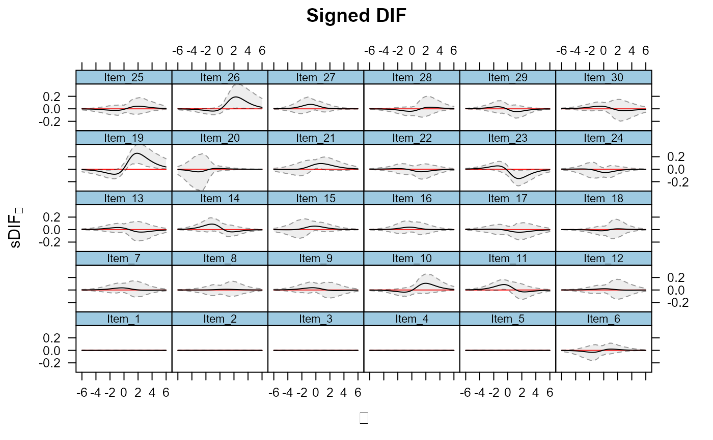#> $sDIF #> sDIF CI_2.5 CI_97.5 X2 df p #> 6 6.516844e-05 -0.06432678 0.05789425 4.261831e-06 1 0.9983528 #> 7 2.610811e-02 -0.03675945 0.07986975 7.863122e-01 1 0.3752176 #> 8 7.680169e-03 -0.05298979 0.06769568 5.934269e-02 1 0.8075379 #> 9 2.583983e-02 -0.03793560 0.09484126 6.266787e-01 1 0.4285762 #> 10 9.805183e-03 -0.05010616 0.06663994 1.119862e-01 1 0.7378941 #> #> $uDIF #> uDIF CI_2.5 CI_97.5 X2 df p #> 6 0.01575283 0.005235868 0.07932363 0.29418128 2 0.8632157 #> 7 0.02616127 0.008610392 0.08279455 0.80358450 2 0.6691197 #> 8 0.00768017 0.005356720 0.07602432 0.05934327 2 0.9707642 #> 9 0.02627612 0.007439077 0.09510864 0.69385220 2 0.7068576 #> 10 0.03575651 0.010192239 0.08964033 1.70297943 2 0.4267787 #>DRF(mod, draws = 500, DIF=TRUE, focal_items = 6:10, plot = TRUE)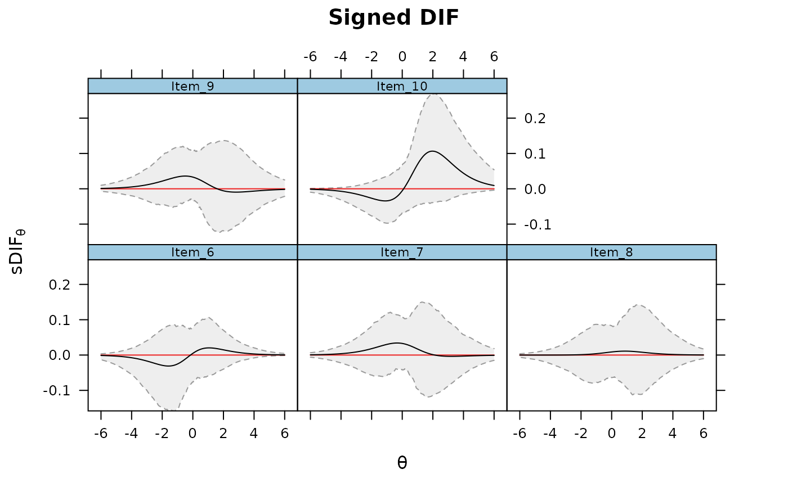DRF(mod, DIF=TRUE, focal_items = 6)#> sDIF uDIF #> 6 6.516844e-05 0.01575283DRF(mod, draws=500, DIF=TRUE, focal_items = 6)#> $sDIF #> sDIF CI_2.5 CI_97.5 X2 df p #> 6 6.516844e-05 -0.06665796 0.06731792 4.080465e-06 1 0.9983883 #> #> $uDIF #> uDIF CI_2.5 CI_97.5 X2 df p #> 6 0.01575283 0.005403191 0.09553818 0.2504128 2 0.8823148 #># evaluate specific values for sDRF Theta_nodes <- matrix(seq(-6,6,length.out = 100)) sDTF <- DRF(mod, Theta_nodes=Theta_nodes) head(sDTF)#> Theta sDRF #> sDRF.1 -6.000000 -0.005783998 #> sDRF.2 -5.878788 -0.006161014 #> sDRF.3 -5.757576 -0.006547670 #> sDRF.4 -5.636364 -0.006939921 #> sDRF.5 -5.515152 -0.007332289 #> sDRF.6 -5.393939 -0.007717503#> Theta sDRF CI_2.5 CI_97.5 #> sDRF.1 -6.000000 -0.005783998 -0.2355893 0.06842995 #> sDRF.2 -5.878788 -0.006161014 -0.2515197 0.07412373 #> sDRF.3 -5.757576 -0.006547670 -0.2683347 0.08028320 #> sDRF.4 -5.636364 -0.006939921 -0.2858448 0.08694392 #> sDRF.5 -5.515152 -0.007332289 -0.3046702 0.09414362 #> sDRF.6 -5.393939 -0.007717503 -0.3244866 0.10192218#> Theta sDRF #> sDRF.1 -6.000000 -0.001155538 #> sDRF.2 -5.878788 -0.001302580 #> sDRF.3 -5.757576 -0.001467603 #> sDRF.4 -5.636364 -0.001652662 #> sDRF.5 -5.515152 -0.001860015 #> sDRF.6 -5.393939 -0.002092135#> Theta sDRF CI_2.5 CI_97.5 #> sDRF.1 -6.000000 -0.001155538 -0.02195929 0.003036562 #> sDRF.2 -5.878788 -0.001302580 -0.02372318 0.003386642 #> sDRF.3 -5.757576 -0.001467603 -0.02561740 0.003775014 #> sDRF.4 -5.636364 -0.001652662 -0.02764963 0.004205453 #> sDRF.5 -5.515152 -0.001860015 -0.02982771 0.004682021 #> sDRF.6 -5.393939 -0.002092135 -0.03215947 0.005209065## ------------- ## random slopes and intercepts for 15 items, and latent mean difference ## (no systematic DTF should exist, but DIF will be present) set.seed(1234) dat1 <- simdata(a, d, N, itemtype = 'dich', mu=.50, sigma=matrix(1.5)) dat2 <- simdata(a + c(numeric(15), rnorm(n-15, 0, .25)), d + c(numeric(15), rnorm(n-15, 0, .5)), N, itemtype = 'dich') dat <- rbind(dat1, dat2) mod1 <- multipleGroup(dat, 1, group=group) plot(mod1)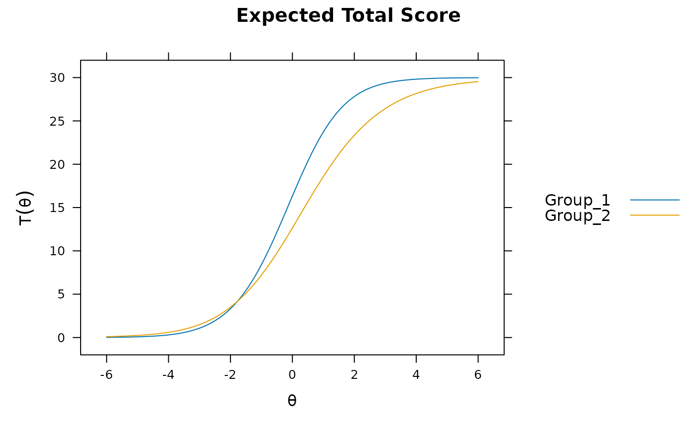DRF(mod1) #does not account for group differences! Need anchors#> #>#> n_focal_items sDRF uDRF #> 1 30 3.249892 3.267577mod2 <- multipleGroup(dat, model, group=group, SE=TRUE, invariance=c('free_means', 'free_var')) plot(mod2)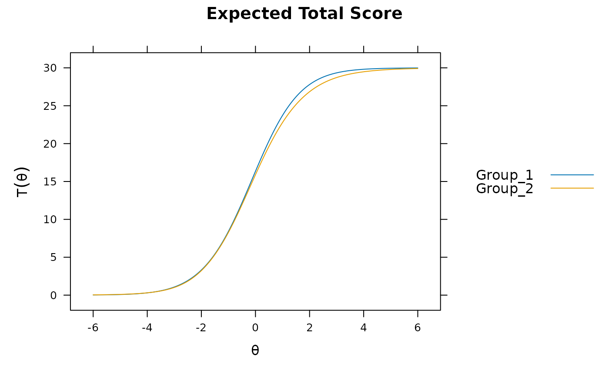#significant DIF in multiple items.... # DIF(mod2, which.par=c('a1', 'd'), items2test=16:30) DRF(mod2)#> n_focal_items sDRF uDRF #> 1 30 0.4235601 0.4235605DRF(mod2, draws=500) #non-sig DTF due to item cancellation#> n_focal_items stat CI_2.5 CI_97.5 X2 df p #> sDRF 30 0.4235601 -0.2474228 1.078280 1.603211 1 0.2054488 #> uDRF 30 0.4235605 0.1650901 1.127414 1.603367 2 0.4485733## ------------- ## systematic differing slopes and intercepts (clear DTF) set.seed(1234) dat1 <- simdata(a, d, N, itemtype = 'dich', mu=.50, sigma=matrix(1.5)) dat2 <- simdata(a + c(numeric(15), rnorm(n-15, 1, .25)), d + c(numeric(15), rnorm(n-15, 1, .5)), N, itemtype = 'dich') dat <- rbind(dat1, dat2) mod3 <- multipleGroup(dat, model, group=group, SE=TRUE, invariance=c('free_means', 'free_var')) plot(mod3) #visable DTF happening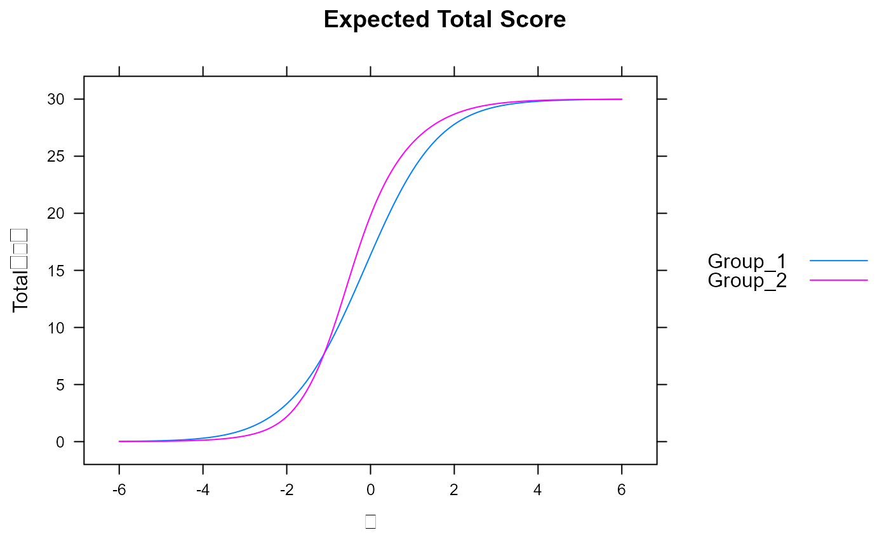# DIF(mod3, c('a1', 'd'), items2test=16:30) DRF(mod3) #unsigned bias. Signed bias indicates group 2 scores generally higher on average#> n_focal_items sDRF uDRF #> 1 30 -1.980246 2.190947DRF(mod3, draws=500)#> n_focal_items stat CI_2.5 CI_97.5 X2 df p #> sDRF 30 -1.980246 -2.660694 -1.154279 28.90593 1 7.597989e-08 #> uDRF 30 2.190947 1.519614 2.778101 40.77308 2 1.400354e-09DRF(mod3, draws=500, plot=TRUE) #multiple DRF areas along Theta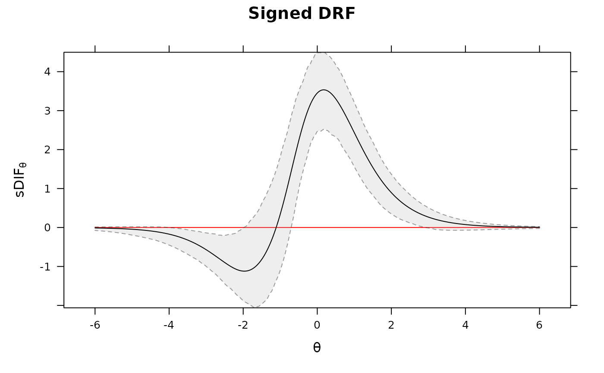# plot the DIF DRF(mod3, draws=500, DIF=TRUE, plot=TRUE)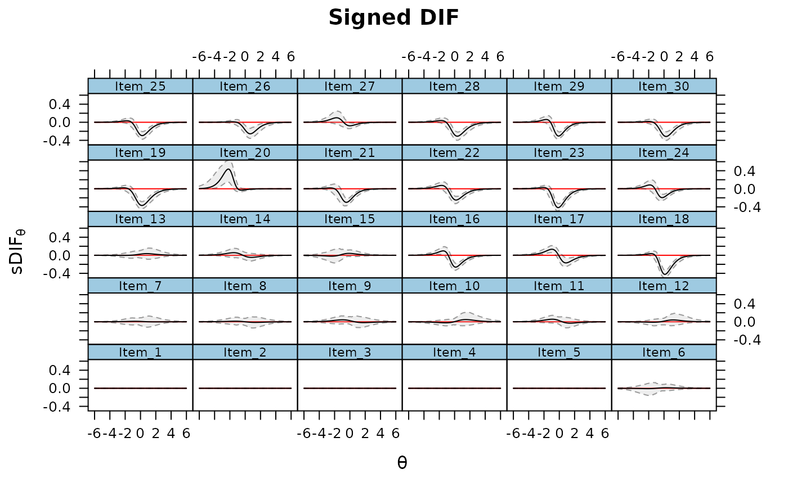# evaluate specific values for sDRF Theta_nodes <- matrix(seq(-6,6,length.out = 100)) sDTF <- DRF(mod3, Theta_nodes=Theta_nodes, draws=200) head(sDTF)#> Theta sDRF CI_2.5 CI_97.5 #> sDRF.1 -6.000000 0.01165940 -0.02367022 0.1023228 #> sDRF.2 -5.878788 0.01372714 -0.02425510 0.1135148 #> sDRF.3 -5.757576 0.01616495 -0.02464453 0.1258754 #> sDRF.4 -5.636364 0.01903910 -0.02478217 0.1395150 #> sDRF.5 -5.515152 0.02242752 -0.02460105 0.1545521 #> sDRF.6 -5.393939 0.02642174 -0.02402207 0.1711138# DIF sDIF <- DRF(mod3, Theta_nodes=Theta_nodes, focal_items = 30, draws=200) car::some(sDIF)#> Error in loadNamespace(name): there is no package called ‘car’## ---------------------------------------------------------------- ### multidimensional DTF set.seed(1234) n <- 50 N <- 1000 # only first 5 items as anchors within each dimension model <- 'F1 = 1-25 F2 = 26-50 COV = F1*F2 CONSTRAINB = (1-5, a1), (1-5, 26-30, d), (26-30, a2)' a <- matrix(c(rep(1, 25), numeric(50), rep(1, 25)), n) d <- matrix(rnorm(n), n) group <- c(rep('Group_1', N), rep('Group_2', N)) Cov <- matrix(c(1, .5, .5, 1.5), 2) Mean <- c(0, 0.5) # groups completely equal dat1 <- simdata(a, d, N, itemtype = 'dich', sigma = cov2cor(Cov)) dat2 <- simdata(a, d, N, itemtype = 'dich', sigma = Cov, mu = Mean) dat <- rbind(dat1, dat2) mod <- multipleGroup(dat, model, group=group, SE=TRUE, invariance=c('free_means', 'free_var')) coef(mod, simplify=TRUE)#> $Group_1 #> $items #> a1 a2 d g u #> Item_1 1.006 0.000 -1.208 0 1 #> Item_2 1.080 0.000 0.301 0 1 #> Item_3 0.833 0.000 1.127 0 1 #> Item_4 0.977 0.000 -2.342 0 1 #> Item_5 1.006 0.000 0.410 0 1 #> Item_6 0.864 0.000 0.428 0 1 #> Item_7 1.014 0.000 -0.495 0 1 #> Item_8 1.133 0.000 -0.472 0 1 #> Item_9 0.945 0.000 -0.585 0 1 #> Item_10 1.001 0.000 -0.787 0 1 #> Item_11 1.009 0.000 -0.390 0 1 #> Item_12 0.920 0.000 -1.061 0 1 #> Item_13 1.189 0.000 -0.711 0 1 #> Item_14 1.125 0.000 0.067 0 1 #> Item_15 1.122 0.000 0.896 0 1 #> Item_16 1.094 0.000 -0.203 0 1 #> Item_17 1.041 0.000 -0.479 0 1 #> Item_18 1.011 0.000 -0.848 0 1 #> Item_19 0.962 0.000 -0.768 0 1 #> Item_20 0.937 0.000 2.372 0 1 #> Item_21 0.935 0.000 0.082 0 1 #> Item_22 0.886 0.000 -0.482 0 1 #> Item_23 0.921 0.000 -0.443 0 1 #> Item_24 0.937 0.000 0.521 0 1 #> Item_25 0.959 0.000 -0.674 0 1 #> Item_26 0.000 0.999 -1.498 0 1 #> Item_27 0.000 0.978 0.590 0 1 #> Item_28 0.000 0.997 -1.035 0 1 #> Item_29 0.000 0.917 -0.055 0 1 #> Item_30 0.000 0.982 -0.970 0 1 #> Item_31 0.000 0.891 0.931 0 1 #> Item_32 0.000 0.863 -0.453 0 1 #> Item_33 0.000 1.140 -0.759 0 1 #> Item_34 0.000 0.943 -0.469 0 1 #> Item_35 0.000 1.289 -1.852 0 1 #> Item_36 0.000 0.791 -1.064 0 1 #> Item_37 0.000 0.980 -2.323 0 1 #> Item_38 0.000 1.051 -1.367 0 1 #> Item_39 0.000 1.097 -0.113 0 1 #> Item_40 0.000 0.908 -0.522 0 1 #> Item_41 0.000 1.059 1.708 0 1 #> Item_42 0.000 1.146 -1.078 0 1 #> Item_43 0.000 1.086 -0.967 0 1 #> Item_44 0.000 1.095 -0.415 0 1 #> Item_45 0.000 0.984 -1.066 0 1 #> Item_46 0.000 0.996 -0.726 0 1 #> Item_47 0.000 1.330 -1.037 0 1 #> Item_48 0.000 1.072 -1.147 0 1 #> Item_49 0.000 0.898 -0.428 0 1 #> Item_50 0.000 1.078 -0.525 0 1 #> #> $means #> F1 F2 #> 0 0 #> #> $cov #> F1 F2 #> F1 1.000 0.453 #> F2 0.453 1.000 #> #> #> $Group_2 #> $items #> a1 a2 d g u #> Item_1 1.006 0.000 -1.208 0 1 #> Item_2 1.080 0.000 0.301 0 1 #> Item_3 0.833 0.000 1.127 0 1 #> Item_4 0.977 0.000 -2.342 0 1 #> Item_5 1.006 0.000 0.410 0 1 #> Item_6 0.886 0.000 0.558 0 1 #> Item_7 0.967 0.000 -0.582 0 1 #> Item_8 0.988 0.000 -0.613 0 1 #> Item_9 0.962 0.000 -0.467 0 1 #> Item_10 0.866 0.000 -0.999 0 1 #> Item_11 1.076 0.000 -0.448 0 1 #> Item_12 1.145 0.000 -1.198 0 1 #> Item_13 0.991 0.000 -0.789 0 1 #> Item_14 1.039 0.000 0.071 0 1 #> Item_15 1.201 0.000 1.071 0 1 #> Item_16 0.989 0.000 -0.084 0 1 #> Item_17 0.995 0.000 -0.569 0 1 #> Item_18 0.932 0.000 -0.925 0 1 #> Item_19 0.866 0.000 -0.789 0 1 #> Item_20 1.123 0.000 2.463 0 1 #> Item_21 1.055 0.000 0.200 0 1 #> Item_22 1.107 0.000 -0.610 0 1 #> Item_23 0.992 0.000 -0.512 0 1 #> Item_24 0.992 0.000 0.388 0 1 #> Item_25 0.934 0.000 -0.794 0 1 #> Item_26 0.000 0.999 -1.498 0 1 #> Item_27 0.000 0.978 0.590 0 1 #> Item_28 0.000 0.997 -1.035 0 1 #> Item_29 0.000 0.917 -0.055 0 1 #> Item_30 0.000 0.982 -0.970 0 1 #> Item_31 0.000 1.015 0.962 0 1 #> Item_32 0.000 1.115 -0.595 0 1 #> Item_33 0.000 1.096 -0.874 0 1 #> Item_34 0.000 0.857 -0.486 0 1 #> Item_35 0.000 1.138 -1.636 0 1 #> Item_36 0.000 1.085 -1.353 0 1 #> Item_37 0.000 1.115 -2.169 0 1 #> Item_38 0.000 1.146 -1.450 0 1 #> Item_39 0.000 1.130 -0.441 0 1 #> Item_40 0.000 0.978 -0.632 0 1 #> Item_41 0.000 1.203 1.439 0 1 #> Item_42 0.000 0.942 -0.943 0 1 #> Item_43 0.000 1.033 -0.898 0 1 #> Item_44 0.000 1.145 -0.339 0 1 #> Item_45 0.000 0.844 -0.728 0 1 #> Item_46 0.000 1.068 -1.045 0 1 #> Item_47 0.000 0.953 -1.123 0 1 #> Item_48 0.000 1.019 -1.316 0 1 #> Item_49 0.000 0.881 -0.381 0 1 #> Item_50 0.000 1.093 -0.605 0 1 #> #> $means #> F1 F2 #> 0.071 0.505 #> #> $cov #> F1 F2 #> F1 1.067 0.518 #> F2 0.518 1.415 #> #>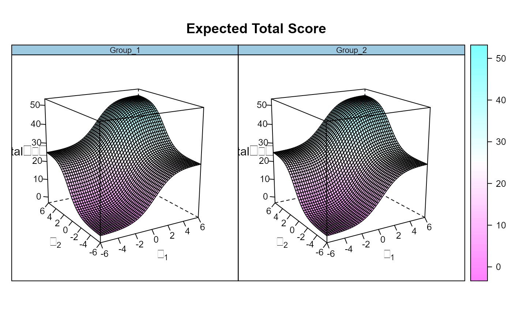DRF(mod)#> n_focal_items sDRF uDRF #> 1 50 0.3467313 0.3467314# some intercepts slightly higher in Group 2 d2 <- d d2[c(10:15, 31:35)] <- d2[c(10:15, 31:35)] + 1 dat1 <- simdata(a, d, N, itemtype = 'dich', sigma = cov2cor(Cov)) dat2 <- simdata(a, d2, N, itemtype = 'dich', sigma = Cov, mu = Mean) dat <- rbind(dat1, dat2) mod <- multipleGroup(dat, model, group=group, SE=TRUE, invariance=c('free_means', 'free_var')) coef(mod, simplify=TRUE)#> $Group_1 #> $items #> a1 a2 d g u #> Item_1 0.943 0.000 -1.195 0 1 #> Item_2 0.974 0.000 0.294 0 1 #> Item_3 0.833 0.000 1.131 0 1 #> Item_4 1.049 0.000 -2.575 0 1 #> Item_5 1.078 0.000 0.517 0 1 #> Item_6 0.919 0.000 0.456 0 1 #> Item_7 0.929 0.000 -0.472 0 1 #> Item_8 0.918 0.000 -0.554 0 1 #> Item_9 0.907 0.000 -0.582 0 1 #> Item_10 1.096 0.000 -0.821 0 1 #> Item_11 1.000 0.000 -0.483 0 1 #> Item_12 0.987 0.000 -1.016 0 1 #> Item_13 1.013 0.000 -0.869 0 1 #> Item_14 0.861 0.000 0.104 0 1 #> Item_15 1.097 0.000 0.908 0 1 #> Item_16 0.871 0.000 -0.119 0 1 #> Item_17 0.949 0.000 -0.417 0 1 #> Item_18 1.019 0.000 -0.987 0 1 #> Item_19 1.031 0.000 -0.962 0 1 #> Item_20 0.904 0.000 2.378 0 1 #> Item_21 1.177 0.000 0.061 0 1 #> Item_22 1.044 0.000 -0.551 0 1 #> Item_23 0.949 0.000 -0.510 0 1 #> Item_24 0.915 0.000 0.387 0 1 #> Item_25 0.901 0.000 -0.778 0 1 #> Item_26 0.000 0.978 -1.450 0 1 #> Item_27 0.000 0.999 0.603 0 1 #> Item_28 0.000 1.105 -1.109 0 1 #> Item_29 0.000 1.034 0.043 0 1 #> Item_30 0.000 0.974 -0.925 0 1 #> Item_31 0.000 0.982 1.257 0 1 #> Item_32 0.000 1.012 -0.407 0 1 #> Item_33 0.000 0.957 -0.619 0 1 #> Item_34 0.000 1.076 -0.548 0 1 #> Item_35 0.000 0.761 -1.608 0 1 #> Item_36 0.000 0.962 -1.091 0 1 #> Item_37 0.000 0.891 -2.076 0 1 #> Item_38 0.000 0.895 -1.162 0 1 #> Item_39 0.000 1.023 -0.260 0 1 #> Item_40 0.000 0.949 -0.394 0 1 #> Item_41 0.000 1.145 1.450 0 1 #> Item_42 0.000 1.037 -1.063 0 1 #> Item_43 0.000 0.891 -0.937 0 1 #> Item_44 0.000 0.929 -0.397 0 1 #> Item_45 0.000 0.987 -0.887 0 1 #> Item_46 0.000 0.955 -1.033 0 1 #> Item_47 0.000 0.888 -1.063 0 1 #> Item_48 0.000 1.058 -1.267 0 1 #> Item_49 0.000 0.969 -0.486 0 1 #> Item_50 0.000 1.086 -0.442 0 1 #> #> $means #> F1 F2 #> 0 0 #> #> $cov #> F1 F2 #> F1 1.000 0.409 #> F2 0.409 1.000 #> #> #> $Group_2 #> $items #> a1 a2 d g u #> Item_1 0.943 0.000 -1.195 0 1 #> Item_2 0.974 0.000 0.294 0 1 #> Item_3 0.833 0.000 1.131 0 1 #> Item_4 1.049 0.000 -2.575 0 1 #> Item_5 1.078 0.000 0.517 0 1 #> Item_6 0.904 0.000 0.610 0 1 #> Item_7 1.006 0.000 -0.476 0 1 #> Item_8 0.889 0.000 -0.501 0 1 #> Item_9 0.856 0.000 -0.604 0 1 #> Item_10 0.892 0.000 0.069 0 1 #> Item_11 0.931 0.000 0.498 0 1 #> Item_12 0.963 0.000 0.065 0 1 #> Item_13 0.845 0.000 0.311 0 1 #> Item_14 0.894 0.000 1.036 0 1 #> Item_15 0.998 0.000 1.919 0 1 #> Item_16 0.949 0.000 -0.155 0 1 #> Item_17 0.990 0.000 -0.545 0 1 #> Item_18 0.867 0.000 -0.944 0 1 #> Item_19 0.894 0.000 -0.871 0 1 #> Item_20 0.733 0.000 2.195 0 1 #> Item_21 0.854 0.000 0.059 0 1 #> Item_22 0.784 0.000 -0.498 0 1 #> Item_23 0.967 0.000 -0.561 0 1 #> Item_24 0.945 0.000 0.385 0 1 #> Item_25 0.940 0.000 -0.794 0 1 #> Item_26 0.000 0.978 -1.450 0 1 #> Item_27 0.000 0.999 0.603 0 1 #> Item_28 0.000 1.105 -1.109 0 1 #> Item_29 0.000 1.034 0.043 0 1 #> Item_30 0.000 0.974 -0.925 0 1 #> Item_31 0.000 0.998 1.989 0 1 #> Item_32 0.000 1.190 0.252 0 1 #> Item_33 0.000 1.064 0.076 0 1 #> Item_34 0.000 0.885 0.444 0 1 #> Item_35 0.000 1.065 -0.597 0 1 #> Item_36 0.000 1.079 -1.273 0 1 #> Item_37 0.000 1.034 -2.217 0 1 #> Item_38 0.000 1.040 -1.451 0 1 #> Item_39 0.000 1.159 -0.496 0 1 #> Item_40 0.000 1.015 -0.711 0 1 #> Item_41 0.000 0.946 1.416 0 1 #> Item_42 0.000 1.006 -1.145 0 1 #> Item_43 0.000 0.968 -0.818 0 1 #> Item_44 0.000 1.099 -0.322 0 1 #> Item_45 0.000 1.062 -1.103 0 1 #> Item_46 0.000 1.064 -0.951 0 1 #> Item_47 0.000 1.025 -1.122 0 1 #> Item_48 0.000 0.975 -1.194 0 1 #> Item_49 0.000 1.082 -0.461 0 1 #> Item_50 0.000 0.935 -0.513 0 1 #> #> $means #> F1 F2 #> 0.003 0.578 #> #> $cov #> F1 F2 #> F1 1.164 0.458 #> F2 0.458 1.341 #> #>DRF(mod)#> n_focal_items sDRF uDRF #> 1 50 -1.80324 1.80324DRF(mod, draws = 500)#> n_focal_items stat CI_2.5 CI_97.5 X2 df p #> sDRF 50 -1.80324 -2.404906 -1.267602 40.0343 1 2.495426e-10 #> uDRF 50 1.80324 1.251209 2.404188 40.0343 2 2.026108e-09# }